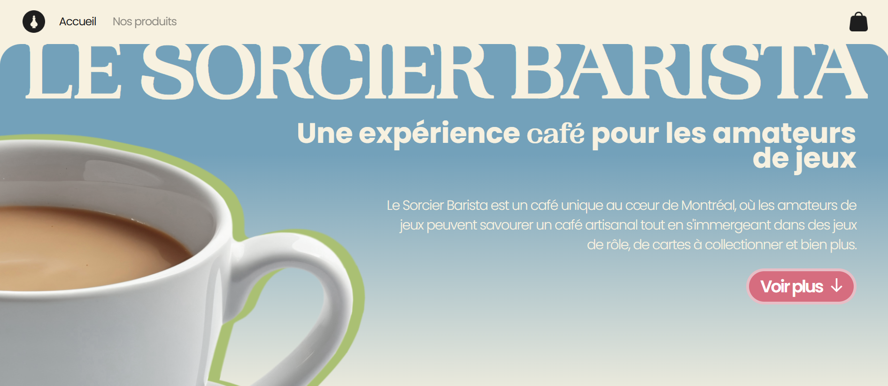
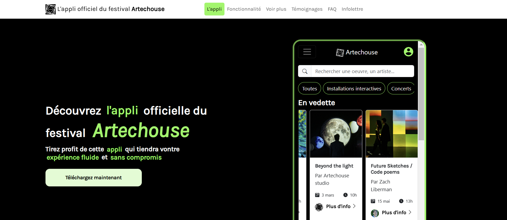
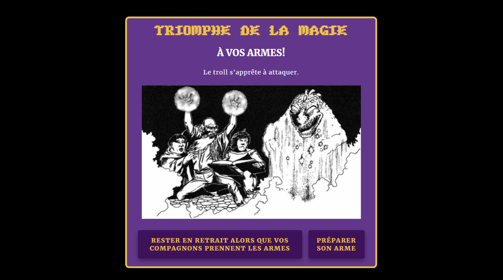

Justine Rousseau
portfolio
à propos
Allo!
Moi c’est Justine, étudiante en troisième année de la Techniques
d’intégration multimédia. Je suis passionnée, entre autres, du
développement web et du
design graphique. Je recherche
présentement un stage dans l’un de ces domaines.
Basé à Montréal, Québec
438-722-5392
justinersu05@gmail.com
projets
Le sorcier barista
Projet personnel de création d'un site de A à Z pour une entreprise fictive qui combine café et boutique de jeux. Pour l'instant, seule la page d'accueil statique est terminée, mais j'envisage d'ajouter prochainement un panier d'achat avec React.
rôle: designer et développeuse web
technologie: html, css/sass, javascript
Individuel
App d'un festival d'art numérique
Création d'une application pour un festival d'art numérique avec la librairie Bootstrap. Nous avons choisi le festival Artechouse.
rôle: designer et développeuse web
technologie: html, css, javascript, bootstrap
Maïk Hamel développeur du site
Jeu interactif
Création d’une histoire interactive dont vous êtes le héros dans un style « jeu de rôle rétro ». Le joueur doit prendre des décisions déclanchant diverses actions.
rôle: développeuse web
technologie: html, css, javascript
individuel
Portrait
Création de six portraits qui me représentent. J'ai pris les photos et créé les images vectorielles, puis j'ai agencé le tout dans un style de magazine « grunge ».
rôle: designer graphique, photographe
technologie: photoshop
individuel